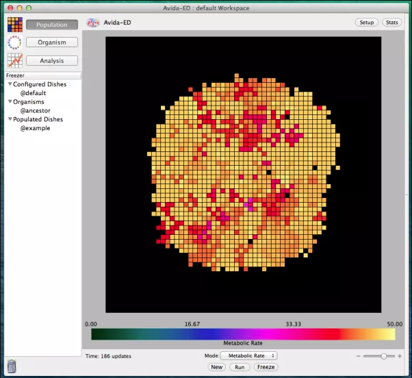
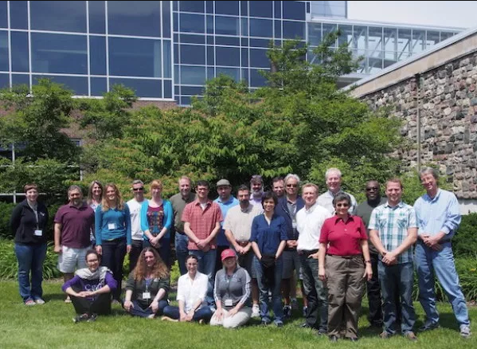

• 2017 Sept 7: Robert T. Pennock & Mike Wiser. “Avida-ED: a web-based, GUI implementation of the Avida software platform, for educational use.” Workshop at European Conference on Artificial Life. Lyon, France.
• 2017 July 27-29: The fourth national Avida-ED Active LENS Workshop for faculty was held at the Michigan State University campus.

Active Lens 2017 July workshop participants (Photo: Wesley Elsberry)
• 2017 July 25 Louise Mead, Cory Kohn, Jim Smith, Mike Wiser. “Avida-ED: An artificial life platform for teaching evolutionary principles and how to “do” science.” BioQUEST 2017: Making Meaning thru Modeling. East Lansing, MI
• Mike Wiser, Kohn C, Mead LS, Smith JJ, and Pennock RT. “Comparing Human and Machine Learning Assessment of Student Reasoning about Natural Selection.” Talk at SABER 2017 July 21-23
• Mike Wiser, Kohn C, Mead LS, Smith JJ, and Pennock RT. “Undergraduate Student Conceptions About Randomness and Mutation.” Poster at SABER. 2017 July 21-23
• Mike Wiser. Undergraduate Student Conceptions About Randomness and Mutation” Poster at Evolution 2017 June 23-28.
• 2017 June 21-23: The third national Avida-ED Active LENS Workshop for faculty was held at the BEACON Center for the Study of Evolution in Action at the University of Washington in Seattle.

{kind=link}
• Louise Mead. “Avida-ED Implementation at MSU: Past, Present, and Future.” HHMI Gateway Summit. Michigan State University. 2017 May 16
• Demo of Avida-ED running at the BEACON Booth at National Association of Biology Teachers (NABT) meeting in 2016 November.
• James J. Smith. “Using Evo-ED cases and Avida-ED digital evolution as integrative, active-learning approaches to evolution education”, Invited seminar, University of Guelph, CBS Office of Educational Scholarship and Practice. 2016 November 15.
• James J. Smith. Professional development session on Avida-ED for four high school teachers at the American School in Barcelona in 2016 October.
• Louise Mead and Cory Kohn “Adventures in Avida-ED.” Workshop at the Kellogg Biological Station GK12 Teacher Workshop. 2016 August 8
• 2016 July 4: Michael Wiser. Conference Tutorial: “AVIDA-ED: Avida-ED, a tool for teaching a classroom research.” ALife XV. Cancun, Mexico.
• 2016 June 28: Amy Lark. Conference Workshop: “Engaging Students in Authentic Science Research Teacher Institute” Michigan Technological University, Houghton, MI.
• 2016 June 20: Jim Smith & Cory Kohn. Conference Workshop: “Avida-ED: An artificial life platform for teaching evolutionary principles and how to “do” science.” 2016 National Academies Special Topics Summer Institute on Quantitative Biology. North Carolina State University, Raleigh, NC.
• 2016 June 18: Michael Wiser, Cory Kohn, Louise Mead, James Smith, Robert T. Pennock. “Comparing Human and Machine Learning Scoring of Open-Ended Responses About Natural Selection” Evolution 2016. Austin, TX.
• 2016 June 18: Robert T. Pennock, Charles Ofria, Diane Blackwood, Matt Rupp. “Avida-ED 3.0: The Digital Evolution Education Platform, Now in the Browser.” Evolution 2016. Austin, TX.

• 2016 June 9-11: The second national Avida-ED Active LENS Workshop for faculty was held at Lyman Briggs College and the BEACON Center for the Study of Evolution in Action here at MSU.

Active Lens Workshop 2016 workshop participants (Photo: Wesley Elsberry)
• 2016 Jan. 19: We are now accepting applications for the second annual LEVERS Avida-ED Workshop for MSU biology faculty to be held at Michigan State University, East Lansing, MI in June 9-11, 2016. [Applications CLOSED March 2016].
• 2015 July 13. Louise Mead, “Using Evolution in Action to Address Students’ Naive Concepts.” Poster. Gordon Conference on Undergraduate Biology Education Research. Lewiston, ME.
• 2015 July 8-10 James J. Smith, Western Conference for Science Education (WCSE), invited speaker, Western University, London, ON, Canada.
• 2015 June 27. Louise Mead, “Contextual gains in student understanding of evolution after inquiry-based exercises with digital organisms” Presentation. Evolution 2015 conference.. Sao Paolo, Brazil.
• 2015 June 13. James J. Smith, HHMI/BioQUEST/SCN Conference, invited speaker, Harvey Mudd College, Claremont, CA.
• 2015 June 4-6: Active LENS Workshop. We held the first of our national Avida-ED faculty development workshops as part of our NSF Active LENS grant at Lyman Briggs College and the BEACON Center for the Study of Evolution in Action here at MSU. The grant funded 18 participants—mostly university and college biology faculty—in nine teams of two and BEACON funded an additional team of two High School teachers. Teams came from both public and private colleges, universities, community college, and high schools, with participants from California, Florida, Illinois, Michigan, New Mexico, North Carolina, Ohio, Pennsylvania and Virginia.

Active Lens Workshop 2015 workshop participants (Photo: Wesley Elsberry)
• 2015 June 1. Robert T. Pennock. “Teaching Evolution and Scientific Practices using Avida-ED.” Project 2061. American Association for the Advancement of Science. Washington DC.
• 2015 May 28-31: Jim Smith will present “Avida-ED: An artificial life platform for teaching evolutionary principles and the nature of science”, which has been accepted at the 22nd Annual ASM Conference for Undergraduate Educators to be held at the Renaissance Austin Hotel in Austin, TX.
• 2015 April 15: The Avida-ED Project is pleased to welcome our new software developer Diane Blackwood. Diane has an MS in biomedical engineering and a PhD in Wildlife and Fisheries Science and has done research on dolphin acoustics. Most recently, she developed software for the Fish & Wildlife Research Institute. Diane will be primarily working on a browser-based version of Avida-ED that will avoid the need to maintain cross-platform versions of the application.
• 2015 February 3: Robert T. Pennock gives an invited Avida-ED talk and demo to biology instructors. Sidwell Friends School, Washington DC.
• 2014 November 14: Robert T. Pennock gives an invited talk on “Digital Darwin: Evolution in Action in Your Computer” at the National Association of Biology Teachers (NABT) conference in Cleveland, OH.
• 2014 October 15: Postdoc position offered for Avida-ED project. Please download and pass along our position description. We will begin reviewing applications November 15. UPDATE: The position has been filled. Welcome Mike Wiser!
• 2014 Oct. 3. Wendy Johnson and Robert T. Pennock give “Evolution in Action in the Classroom with Avida-ED Digital Evolution Software” workshop at Life Discovery – Doing Science conference, San Jose CA.
• 2014 September 7: Avida-ED curriculum article published in American Biology Teacher: Amy Lark, Gail Richmond, Robert T. Pennock. “Modeling Evolution in the Classroom: The Case of the Fukushima Butterflies” (2014. 76(7):450-454).
Abstract: New science standards and reform recommendations spanning grades K-16 focus on a limited set of key scientific concepts from each discipline that all students should know, but also emphasize the integration of these with science practices so that students learn not only the “what” of science but also the “how” and “why”. In line with this approach, we present an exercise that models the integration of fundamental evolutionary concepts with science practices. Students use Avida-ED digital evolution software to test claims from a study on mutated butterflies in the vicinity of the compromised Fukushima Daiichi Nuclear Power Plant complex subsequent to the Great East Japan Earthquake of 2011 (Hiyama et al., Scientific Reports 2 Article 570, 2012). This exercise is appropriate for use in both high school and undergraduate biology classrooms [pdf]
• 2014 September: The National Science Foundation has awarded the Avida-ED project a five year $2.3m grant to support Avida-ED software and curriculum development, assessment studies, and a series of national faculty development workshops. Robert T. Pennock is the Principle Investigator, with Richard Lenski, Louise Mead, Charles Ofria and James Smith as Co-Principle Investigators.
• 2014 August: Robert T. Pennock is a co-PI of a new grant from the Howard Hughes Medical Institute (HHMI) to reform STEM gateway courses at MSU. Part of this five-year $1.5m grant will fund a programmer and graduate student for the Avida-ED project.
• 2014 April 8: Robert T. Pennock “Observing Digital Evolution with Avida-ED”. Guest lecture in Brian O’Shea’s LB490A seminar, Michigan State University, East Lansing MI.
• 2014 March 6: New model exercise and instructor support materials added “Exploring the Effects of Mutation Rate on Populations” by James Smith and Amy Lark.
• 2014 Feb. 13: Robert T. Pennock “Teaching Evolution and the Nature of Science using Avida-ED” Biology Dept. invited seminar, University of Northern Michigan, Marquette, MI.
• 2014 Feb 12: Robert T. Pennock gives “Digital Darwin: Harnessing Evolution in Your Computer” Darwin Day talk, University of Northern Michigan, Marquette, MI.
• February 2014: New model exercises and instructor support materials on are now available on the Curriculum page, including “Exploring the Effects of Mutation Rate on Individuals” by Amy Lark, and “Exploring Selection and Fitness” by Amy Lark and Robert T. Pennock.
• 2014 January. Golden version of Avida-ED 2.0 released. This is mostly an “under the hood” revision that provides a flexible and powerful foundation for future feature enhancements, but there are some changes that will provide immediate benefits. Major code optimizations make everything run faster with larger world sizes. The speed increase also allowed us to replace the previous pre-evolved ancestor organism with the standard simple replicator ancestor used in the research version of Avida. See Version History for full list of improvements and changes in Avida-ED 2.0.
• 2013 August 28: Amy Lark, Wendy Johnson, Louise Souther Mead, Jim Smith, Gail Richmond, and Robert T. Pennock “Learning with digital evolution software: Improving student understanding and acceptance of evolution.” at Vision & Change in Undergraduate Education: Chronicling Change, Inspiring the Future, Washington, DC.
• 2013 July 11-14: Amy Lark, Wendy Johnson, Louise Souther Mead, Jim Smith, Gail Richmond & Robert T. Pennock. “Learning with digital evolution software: Improving student understanding and acceptance of evolution.” Society for the Advancement of Biology Education Research (SABER), Minneapolis, MN.
• 2013 June 20 -26: Amy Lark, Wendy Johnson, Louise Souther Mead, Jim Smith, Gail Richmond & Robert T. Pennock. “Learning with digital evolution software: Improving student understanding and acceptance of evolution.” Evolution 2013, Snowbird, UT.
• 2013 May 7: Amy Lark, Gail Richmond & Robert T. Pennock “Modeling evolution in the classroom: The case of Fukushima’s mutant butterflies.” CREATE-ing Collaborations in STEM Education Research Mini-Conference, East Lansing MI.
• 2013 March 24: Amy Lark, Wendy Johnson, Louise Souther Mead, Jim Smith, Gail Richmond & Robert T. Pennock. “Teaching with digital evolution software: Assessing student understanding of fundamental concepts.”. Mid-west Ecology and Evolution Conference (MEEC), South Bend, IN.
• 2013 Feb. 13: Robert T. Pennock “Observing Evolution in Action in the Lab and the Classroom” Honors, iBLEND, MARC and RISE symposium. North Carolina A & T University.
• 2014 February. A beta version of Avida-ED 2.0 is released for Mac OS X.
• 2012 August 1: Robert T. Pennock give invited talk “Special Topics in CS: Avida-ED” at Michigan Tapestry Workshop.
• 2012 July 19: Robert T. Pennock gives presentation “Learning Evolution and the Nature of Science using Avida-ED Digital Evolution Software” International Artificial Life XIII Conference. East Lansing, MI.
• 2012 July 7: Robert T. Pennock gives Avida-ED Software Demonstration. Education Symposium. Society for the Study of Evolution Conference. Ottawa, Canada.
• 2012 June 20-22: Wendy Johnson and Amy Lark gives invited talk “The impact of Avida-ED digital evolution software on student understanding of natural selection” on Avida-ED at Integrating STEM Education Research into Teaching: Knowledge of Student Thinking National Conference, University of Maine, Orono, Maine.
• 2012 June 20-22: Amy Lark and Wendy Johnson give workshop “Experimenting with natural selection in the classroom using Avida-ED software” at Integrating STEM Education Research into Teaching: Knowledge of Student Thinking National Conference, University of Maine, Orono, Maine.
• 2012 May 8-9: Lark, A., Johnson, W., Mead, L., Smith, J., and Pennock, R. (2012). “Experimenting with Natural Selection in the Classroom using Avida-ED”. Poster presented at CREATing the Future of STEM Education. East Lansing MI 2012May.
• 2012 April 21: Avida-ED Project wins Phi Kappa Phi Excellence Award in Interdisciplinary Scholarship. The award is presented to interdisciplinary teams in recognition of excellence in interdisciplinary research and instruction or the application of such knowledge and skills to problems and opportunities in society.

Robert Pennock accepts the EAIS award on behalf of the Avida-ED team.
• 2012 March 9: Amy Lark gives Avida-ED demonstration at Michigan Science Teachers Association 2012 Annual Conference, Lansing, MI.
• 2012 March 9: Wendy Johnson, “Observing Natural Selection in the Classroom.” Michigan Science Teachers Association 2012 Annual Conference, Lansing, MI.
• 2012 February 12: Amy Lark gives Avida-ED demonstration at Darwin Discovery Day. MSU Museum.
• 2011 November 3: Robert T. Pennock gives a talk and demonstration of Avida-ED at iBEST Colloquium, University of Idaho.
• 2011 September 16: Robert T. Pennock gives a talk and demonstration of Avida-ED at Utah State University.
• 2011 September: We have provided a temporary fix for the font display problem that occurs under Mac OS X 10.6 (Snow Leopard) and 10.7 (Lion). We are currently at work on a complete recoding of Avida-ED that will make it fully compatible and ready for the new features we have planned for the next major release, but in the meantime users running these systems should download Avida-ED 1.2.0.3011+.
• 2011 March 31-April 1: Robert T. Pennock gives a workshop demonstration of Avida-ED at University of Texas at Austin.
• March 24-25, 2011, Robert T. Pennock gives a workshop demonstration of Avida-ED at North Carolina A&T University.
• 2011 February 23: Charles Ofria gives a talk and and demonstration of Avida-ED at University of Washington.
• 2011 February 11: Robert T. Pennock gives an invited talk and demonstration of Avida-ED at The College of Charleston.
• 2010 Spring: We have developed a BETA version of a new plug-in for Avida-ED that allows the user to create a “Multi-dish” with multiple sub-environments. University instructors who might be interested in helping with classroom beta-testing, please contact the Avida-ED Project <pennock5{at}msu.edu>.
• 2009 October 9: Robert T. Pennock gives an invited talk and demonstration of Avida-ED at University of Missouri, Biochemistry department colloquium.
• 2009 March 28: Robert T. Pennock gives an invited talk and demonstration of Avida-ED at AAAS Speak Out for Science teacher workshop. Tulsa, OK.
• 2008 August 14: Robert T. Pennock presents Avida-ED poster at NSF CCLI PI conference. Washington DC.
• 2008 June 22: Robert T. Pennock gives an invited talk and demonstration of Avida-ED at Evolution 2008 Society for the Study of Evolution (SSE) conference.
Minneapolis, MN.
• 2008 May 29: Robert T. Pennock gives a workshop demonstration of Avida-ED at BioQUEST/NESCent SELECTION Workshop: Tools for Teaching Evolution. Durham, NC.
• 2008 April 4: Robert T. Pennock gives an invited talk and demonstration of Avida-ED at National Evolutionary Synthesis Center, Duke University.
• 2008 April 18: Robert T. Pennock gives an invited talk and demonstration of Avida-ED at 7th Annual International Bioethics Forum:
Evolution in the 21st Century. BioPharmaceutical Technology Center, Madison, WI.
• 2007 November 28: A half-day workshop on using Avida-ED will be given at the National Association of Biology Teachers (NABT) meeting in Atlanta, Georgia. Register at http://www-dev.nescent.org/eog/signup_digital_organism.php.
• 2007 November 2: Released a special Mac OS X version of Avida-ED that runs natively on Intel Macs. Now available in the Download area.
• 2007 October 19: Robert Pennock gives an invited talk and demonstration of Avida-ED at the National Science Teacher Association (NSTA) conference in Detroit, Michigan.
• 2007 July 7: Robert Pennock gives an invited talk about the design and development of Avida-ED at the Genetic and Evolutionary Computation Conference (GECCO) in London, England.
• 2007 June 19: After three years of development and classroom testing, Avida-ED was officially released for public distribution at the Society for the Study of Evolution meeting in Christchurch, New Zealand.
Page updated 2020 March 3
© Robert T. Pennock